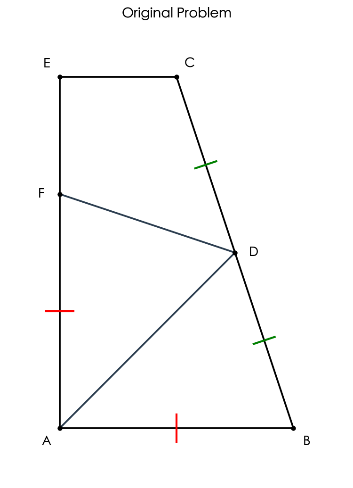
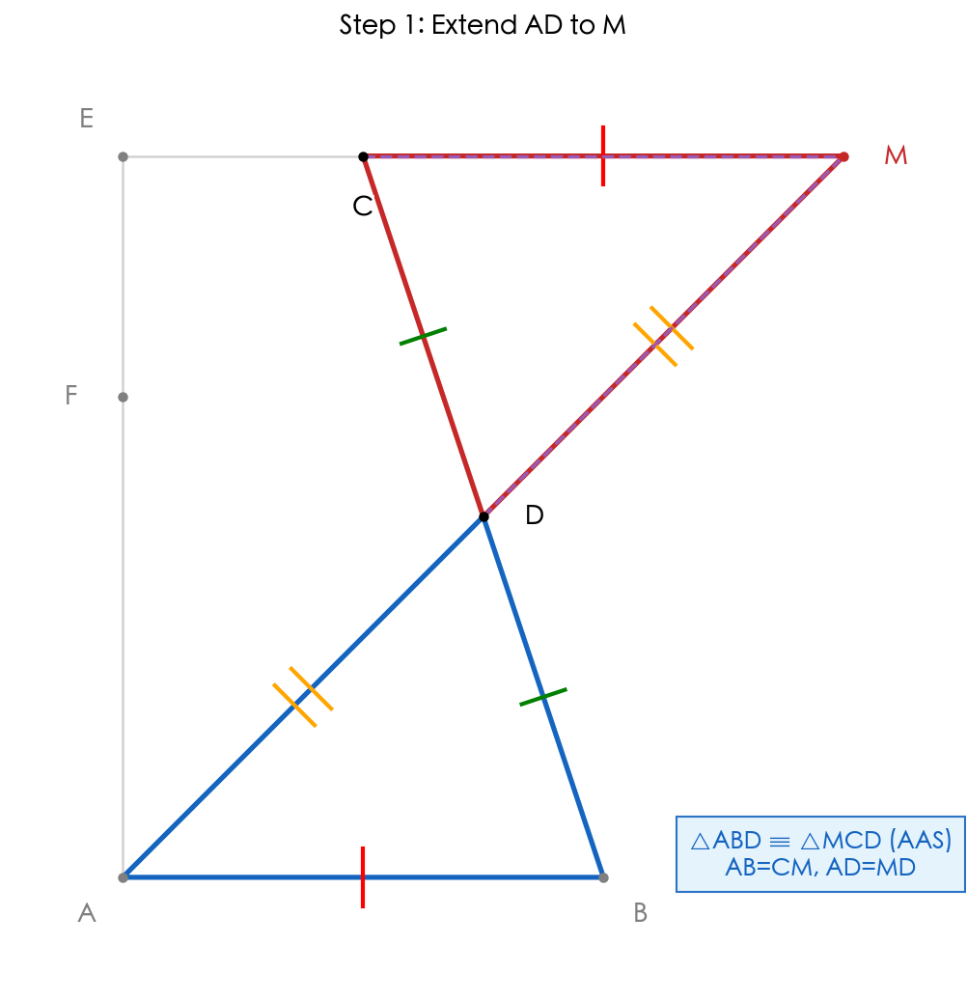
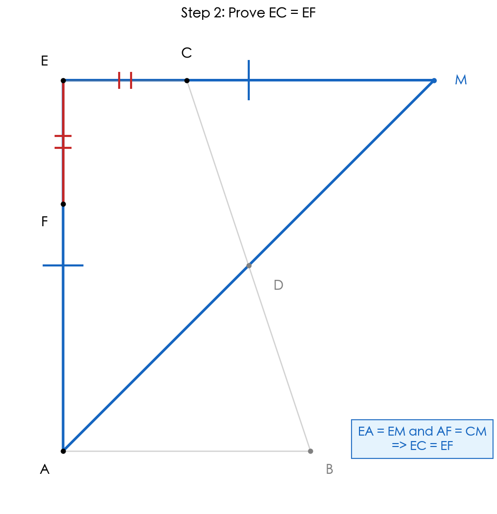
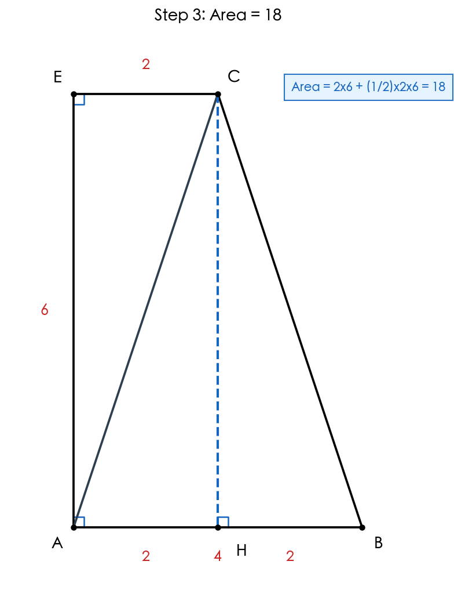
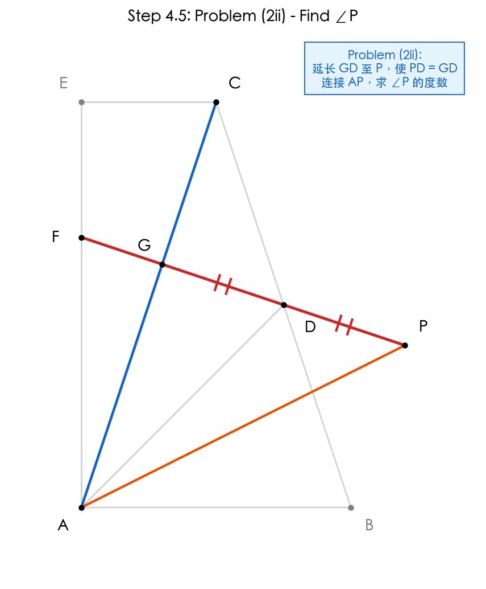
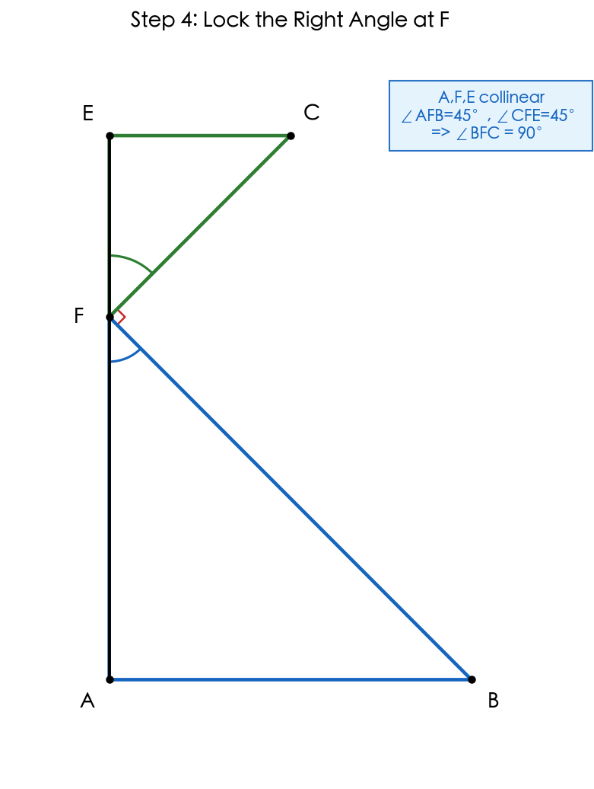
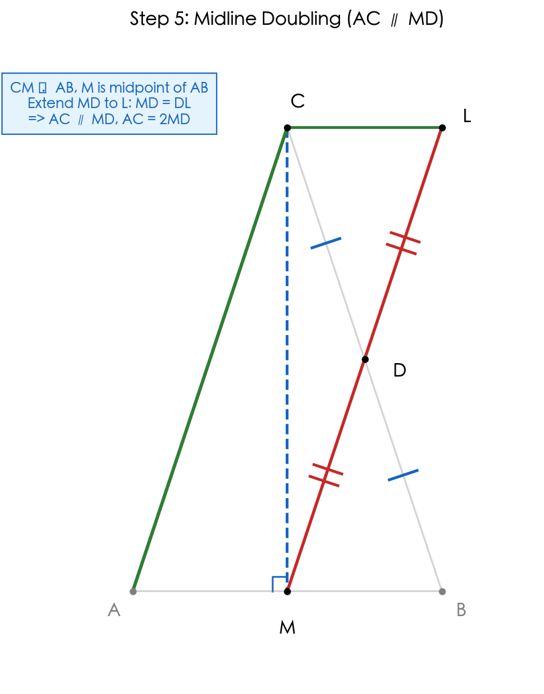
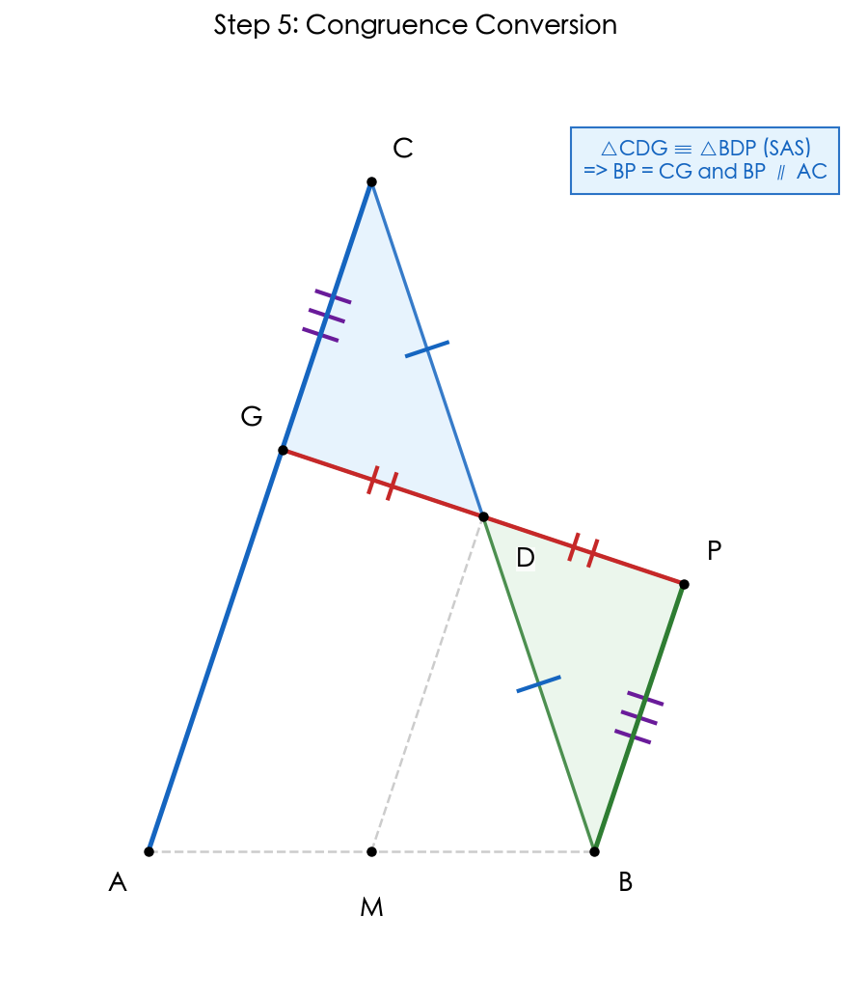
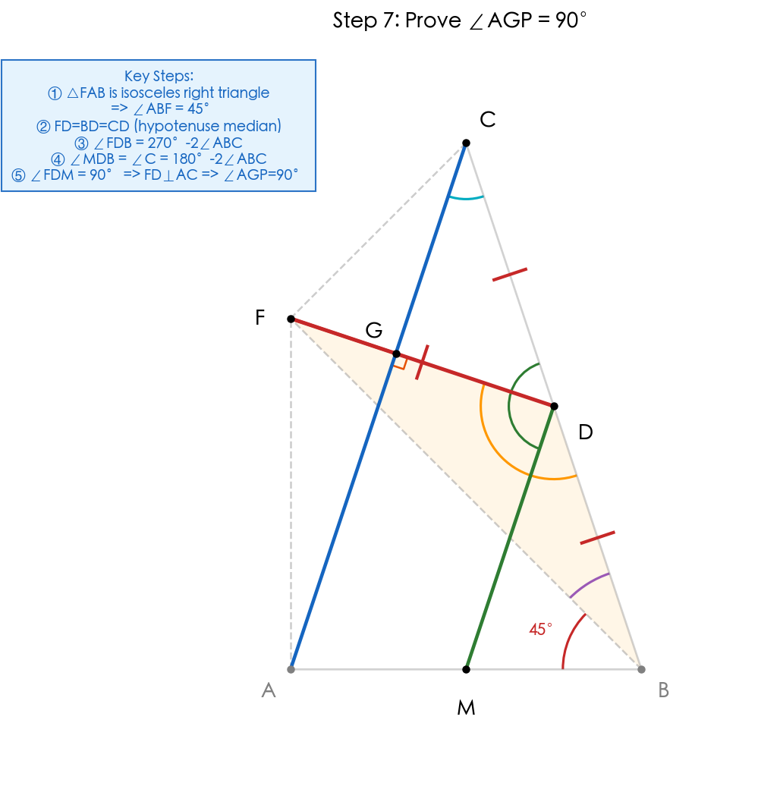
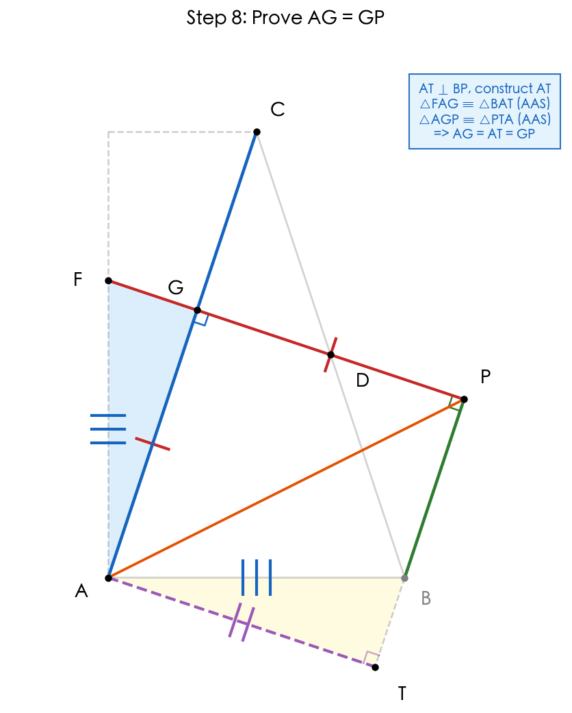

题目
已知：如图，点 D 是 BC 的中点，AB // CE，AD 平分∠EAB，点 F 在线段 AE 上，且 AF = AB。
（1）求证：EC = EF；
（2）连接 CA，交 DF 于点 G，如果∠E = 90°，CA = CB。
i）当 CE = 2 时，求四边形 ABCE 的面积；
ii）延长 GD 至点 P，使 PD = GD，连接 AP，求∠P 的度数。

延长 AD 交 EC 于 M，证明 △ABD ≌ △MCD

构造辅助线：延长 AD 交 EC 的延长线于点 M。
在 △ABD 和 △MCD 中：
• 因为 AB ∥ CE，所以 ∠BAD = ∠M（两直线平行，内错角相等）
• 因为 D 是 BC 的中点，所以 BD = CD
• ∠BDA = ∠CDM（对顶角相等）
所以 △ABD ≌ △MCD（AAS）。
从而 AB = CM，AD = MD。
💭 思考问题
证明 EA = EM，从而 EC = EF

因为 AD 平分 ∠EAB，所以 ∠EAD = ∠BAD。
由第 1 步得 ∠M = ∠BAD（△ABD ≌ △MCD），
所以 ∠EAD = ∠M。
因此 EA = EM（等角对等边），△EMA 是等腰三角形。
利用线段和差关系：
• EA = EF + AF（点 F 在线段 AE 上）
• EM = EC + CM（点 C 在线段 EM 上）
• 已知 AF = AB，且第 1 步已证 AB = CM，所以 AF = CM
• 因为 EA = EM 且 AF = CM，相减得：
EA - AF = EM - CM，即 EC = EF ✓
💭 思考问题
求四边形 ABCE 的面积

由 ∠E = 90° 且 EA = EM，得 △EMA 是等腰直角三角形，∠EAM = ∠M = 45°。
又 AD 平分 ∠EAB，所以 ∠EAB = 90°，四边形 ABCE 是直角梯形。
辅助线：过 C 作 CH ⟂ AB 于 H。
• 四边形 EHCA 是矩形（三个直角），得 CH = EA，AH = CE = 2
证明 △EAC ≌ △HBC（AAS）：
• ∠E = ∠CHB = 90°
• CE ∥ AB ⇒ ∠ECA = ∠CAB（内错角）
• CA = CB ⇒ ∠CAB = ∠B（等边对等角）⇒ ∠ECA = ∠B
• CA = CB（已知）
∴ △EAC ≌ △HBC（AAS），得 HB = EC = 2
求边长：AB = AH + HB = 4；CM = AB = 4；EM = EC + CM = 6；EA = EM = 6
面积：S = S(矩形 EHCA) + S(△HBC) = 2×6 + (1/2)×2×6 = 12 + 6 = 18
💭 思考问题
(2ii) 求 ∠P 的度数
📋 题目
延长 GD 至点 P，使 PD = GD，连接 AP，求 ∠P 的度数。

🎯 证明思路
核心目标：证明 ∠P = 45°，即证明 △AGP 是等腰直角三角形。
📚 将要使用的知识点
🔧 四步骨架
锁定直角：证明 ∠BFC = 90°

已知 A、F、E 三点共线，且 △FAB、△CEF 为等腰直角三角形。
所以 ∠AFB = 45°，∠CFE = 45°。
由平角拆分可得：∠BFC = 180° - 45° - 45° = 90°。
阶段结论：BF ⟂ CF。
💭 思考问题
中线倍长：证明 AC ∥ MD

过 C 作 CM ⟂ AB 于 M。由 CA = CB（等腰三角形三线合一）得 M 是 AB 中点。
延长 MD 至 L，使 DL = MD，连接 CL。
在 △BDM 和 △CDL 中：
• BD = CD（D 为 BC 中点）
• ∠BDM = ∠CDL（对顶角）
• MD = LD（构造）
所以 △BDM ≌ △CDL（SAS）。
从而 CL = BM = AM，且 CL ∥ AB，所以四边形 AMLC 是平行四边形。
阶段结论：AC ∥ MD，AC = 2MD。
💭 思考问题
全等转换：证明 BP ∥ AC

在 △CDG 与 △BDP 中：
• CD = BD（D 为 BC 中点）
• GD = PD（已知）
• ∠CDG = ∠BDP（对顶角）
所以 △CDG ≌ △BDP（SAS）。
由全等对应可得 BP = CG，且由对应角关系可得 BP ∥ AC。
阶段结论：BP ∥ AC ∥ MD。
💭 思考问题
证明 ∠AGP = 90°

要证 ∠AGP = 90°，由于 AC ∥ MD，只需证明 FD ⊥ MD（即 ∠FDM = 90°）即可。
• 由 △FAB 是等腰直角三角形，得 ∠ABF = 45°
• 第一步已证 ∠BFC = 90°，又 D 是斜边 BC 的中点
• 由 (1) 中 △ABD ≌ △MCD 及直角三角形斜边中线性质，得 FD = BD = CD
• 所以 △FBD 是等腰三角形，∠DFB = ∠FBD
• 因此 ∠FDB = 180° - 2∠FBD = 180° - 2(∠ABC - 45°) = 270° - 2∠ABC
• 由第二步知 MD ∥ AC，从而 ∠MDB = ∠C（同位角相等）
• 在等腰 △ABC（CA = CB）中，∠C = 180° - 2∠ABC
计算 ∠FDM：
$$∠FDM = ∠FDB - ∠MDB = (270° - 2∠ABC) - (180° - 2∠ABC) = 90°$$
因为 AC ∥ MD，FD ⊥ MD，所以 FD ⊥ AC，即 ∠AGD = 90°，从而 ∠AGP = 90°。
💭 思考问题
证明 AG = GP

• 因为 BP ∥ AC，且 FD ⊥ AC（已证 ∠AGP = 90°），所以 ∠GPB = 90°
• 由第三步知 BP ∥ AC，又 G 在 AC 上，故 AG ∥ BP
构造辅助线：过点 A 作 AT ⊥ BP 于点 T。
第一次全等：△FAG ≌ △BAT（AAS）
• 因为 AG ∥ BP 且 AT ⊥ BP，所以 AT ⊥ AG，即 ∠GAT = 90°
• 已知 ∠FAB = 90°，所以 ∠FAG + ∠GAB = 90°，且 ∠BAT + ∠GAB = 90°，得 ∠FAG = ∠BAT
• ∠FGA = ∠BTA = 90°，FA = AB（已知）
• 所以 △FAG ≌ △BAT（AAS），得 AG = AT
第二次全等：△AGP ≌ △PTA（AAS）
• ∠AGP = ∠ATP = 90°
• 因为 AT ⊥ BP 且 GP ⊥ BP，所以 AT ∥ GP，得 ∠GAP = ∠TPA（内错角）
• AP = AP（公共边）
• 所以 △AGP ≌ △PTA（AAS），得 GP = AT
结合 AG = AT 与 GP = AT，得 AG = GP。
💭 思考问题
得出结论：∠P = 45°
• 因为 ∠AGP = 90° 且 AG = GP
• 所以 △AGP 是等腰直角三角形
• 故 ∠GPA = 45°，即 ∠APD = 45°
∠P 的度数为 45°
【证明思路总结】
核心策略：通过证明 △AGP 是等腰直角三角形来求 ∠P。
关键过程回顾：
1. 建立平行关系：通过中线倍长（第二步）和全等转换（第三步），建立 BP ∥ AC ∥ MD
2. 证明直角：利用直角三角形斜边中线性质（FD = BD = CD）和角度计算，证明 ∠AGP = 90°
3. 证明等腰：通过两次全等（△FAG ≌ △BAT 和 △AGP ≌ △PTA），证明 AG = GP
4. 得出结论：△AGP 为等腰直角三角形，故 ∠P = 45°
思路梳理
最终答案
（1）EC = EF
（2i）四边形 ABCE 面积 = 18
（2ii）∠P = 45°
解题流程
知识点
解题技巧
- • 倍长/延长构造全等：中点 + 平行线时，延长中线交平行线构造"8字形"AAS全等
- • 线段和差代换：利用已知等量关系通过加减运算直接推出目标线段相等
- • 面积分割法：将复杂图形分割为矩形 + 三角形，分别计算再求和
- • 中点 + 中位线：先用"中点 + 中位线"固定平行方向，再做角度转化
- • 全等先定向再定长：先用全等得到平行关系，再回到等腰直角三角形收束结论
- • 两次全等求线段：第一次全等求 AG = AT，第二次全等求 GP = AT，间接得 AG = GP